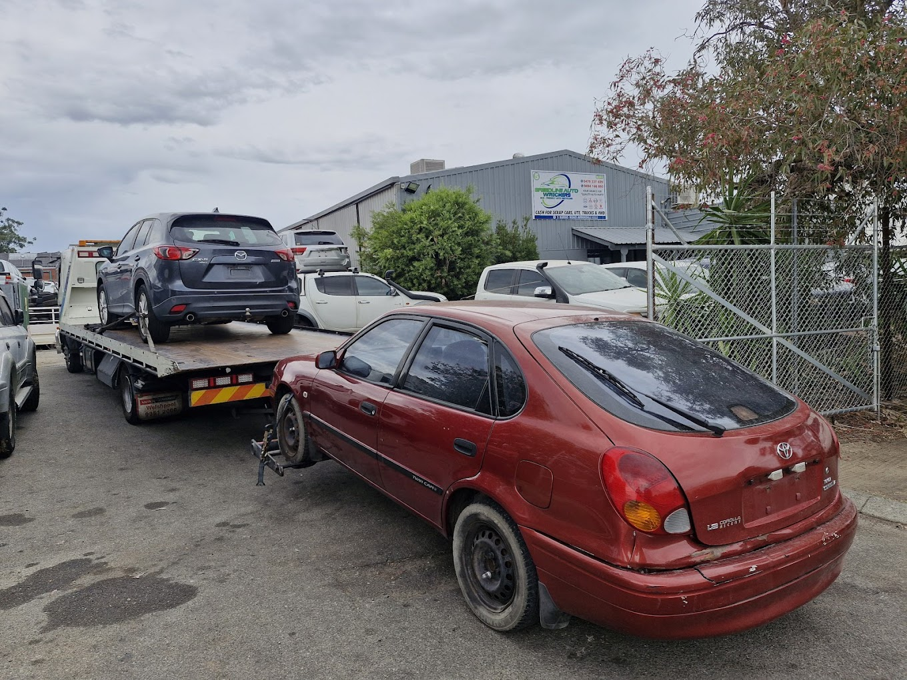

If you've got an old, broken, or unwanted car sitting around, you've probably asked yourself: how much will a salvage yard actually pay for it?
The honest answer is: it depends — but not always in the way people expect.
I learned this the hard way during COVID when I tried to get rid of an old Toyota Corolla. I assumed it had no value left, rushed into the first option I found — and ended up paying to remove it. That experience completely changed how I think about salvage yards today.
My Real Experience Selling a Junk Toyota Corolla
The car was originally my father's — a 1990 Toyota Corolla that had seen better days by the time it reached me. By that point it had:
- Extremely high mileage
- Worn-out mechanical parts throughout
- A garage full of spare broken components
- A general end-of-life condition — it ran, but barely
I was tired of looking at it. So I searched online and discovered that salvage yards actually offer free quotes and free towing — something I genuinely didn't know at the time.

But instead of comparing a few options, I made a critical mistake: I went with the very first company I found.
A tow truck arrived, loaded the car — and I ended up paying $500 just to have it removed.
At the time, I thought I was paying for convenience. Now I know I was simply unprepared.
How Much Do Salvage Yards Really Pay for a Car?
Salvage yard payouts vary widely — anywhere from nothing (or even a cost to you) all the way to several thousand dollars. The difference usually comes down to five key factors:
1. Vehicle Condition
Even a damaged car can hold real value if its parts are reusable. A car that's been in a minor accident may still have a near-perfect engine, intact electronics, or undamaged interior components. Wreckers look at the whole picture — not just the obvious damage.
2. Age and Model
Newer cars generally get better offers. Older vehicles may fetch less unless they happen to have rare or in-demand parts. A 1990 model is a very different proposition to a 2016 model, even if both are "non-runners."
3. Whether the Car Runs
Running vehicles often attract higher quotes — but not always. A running car with a desirable model and low mileage will do well. A running car that's 35 years old with heavily worn parts? Less so.
4. Scrap Metal Value
If usable parts are limited, the car may still be worth something as raw material. Scrap metal prices fluctuate with the market, so this floor value changes over time.
5. Demand for Parts
Popular makes — Toyota, Honda, Mazda — tend to have a stronger parts market. If there's active demand for components from your model, wreckers are more motivated to pay a fair price.
In my case, the car was old, heavily used, and a slow-moving model for parts. That placed it squarely at the bottom of the value range — which I could have anticipated if I'd taken the time to get multiple quotes.
A Friend's Experience: $2,500 for a Damaged, Non-Running Car
Not long after my own experience, a friend went through the same process — and had a completely different outcome.
His car was also damaged and not running. But it was:
- A newer model with more demand in the used parts market
- Lower mileage, meaning engine and drivetrain parts were still viable
- A popular make — attractive to buyers looking for specific components
He received $2,500 from a salvage yard. Cash, collected on pickup, no towing fee.
Same process. Completely different outcome. The car made the difference — not the service.
Are Salvage Yards Actually Legit?
From my experience: yes. Most salvage yards are licensed businesses operating within regulated automotive recycling industries. Their model is straightforward:
- Buy unwanted or end-of-life vehicles
- Strip and resell reusable parts
- Recycle remaining metals and materials responsibly
Reputable operations — like Speed Wreckers — are licensed, eco-certified, and handle all the paperwork on your behalf. They're not trying to scam you. They're simply monetising what your car is still worth to them.
That said, not all salvage yards operate the same way. A few ask about hidden fees at the door, negotiate down on arrival, or charge for towing that was advertised as free. Which is exactly why comparing quotes matters.
How to Get the Best Price for Your Junk Car
If I had to do it again, here's the exact process I'd follow:
-
Call multiple salvage yards Get at least 3–5 quotes. It takes 15 minutes and can mean hundreds of dollars' difference. Most do it over the phone in under 5 minutes.
-
Confirm towing is truly free Most reputable yards include free pickup as standard. Still worth confirming upfront — it should never be an invoice-day surprise.
-
Ask how fast they can collect If speed matters to you, this is a useful tiebreaker between comparable quotes. Same-day service is common among established operators.
-
Compare offers, then choose the best fair quote The highest quote isn't always the best — watch for vague answers about fees. The best quote is the one that's clear, confirmed, and paid on pickup.
-
Schedule pickup and have your paperwork ready You'll need your vehicle registration (or transfer papers). A good wrecker will handle the ownership transfer — you shouldn't need to chase anything after the car leaves.
What Else Should You Watch Out For?
Most salvage yards are straightforward, but before you commit, it's worth checking:
- Is towing genuinely free? Confirm this explicitly on the call, not just from the website headline.
- Is the quoted price guaranteed on arrival? Reputable operators quote a firm price over the phone and don't renegotiate at the door.
- Do they handle the ownership transfer? You want written confirmation that the car has been deregistered and is no longer your responsibility.
- Are there any fees or deductions? Rare with licensed operators, but worth asking directly.
At Speed Wreckers, the price we quote on the phone is the price we pay on the day — no renegotiating, no hidden fees, and full paperwork handled by us. Get a free quote here.
The Takeaway: Your Junk Car Is Probably Worth More Than You Think
If there's one lesson from both my experience and my friend's, it's this:
Don't assume your car is worthless — and don't rush into the first quote you get. A few phone calls can be the difference between paying to remove a car and walking away with $2,500.
The process is simple, fast, and genuinely free with the right operator. The only thing that costs you money is not comparing.
If you're in Perth and want a straight answer on what your car is worth — no obligation, no pressure — give us a call or get a free quote online. We'll tell you exactly what we can offer.